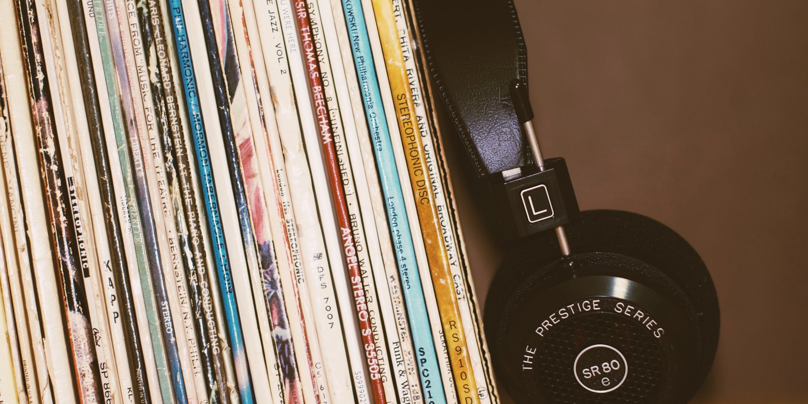
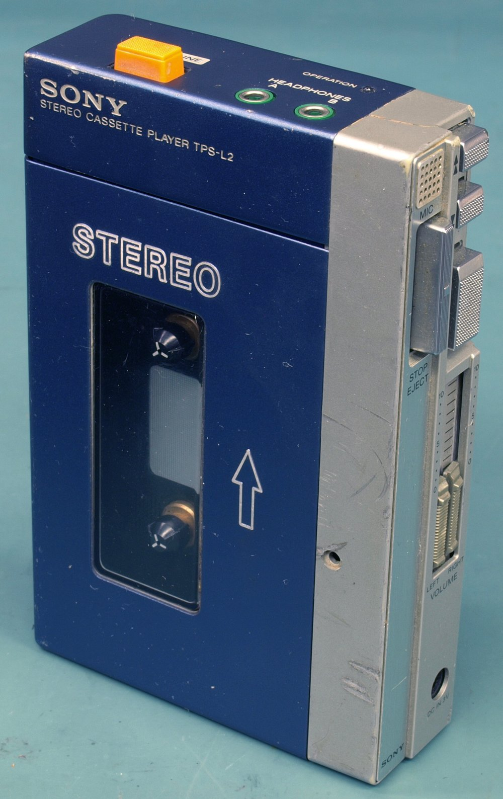

Escape, and the Four Times I Paid for It
ARTS & CULTURE · SEPTEMBER 12, 2026

This is the second entry in my Journey series, and the first about a record. The rule is one record per entry, in the order they reached me — and the one that reached me first, the one that got my attention and turned me into a fan, is Escape. It came out on 17 July 1981. I was nine, a month short of ten. It's the Journey record with "Don't Stop Believin'" on it, which means it's the Journey record everyone under forty knows without knowing they know it, and it's also, as it happens, the record whose history can be told as the history of every way I've ever paid for music. I'll do the record first and the paying second.
The Record
The thing to understand about Escape is that it was the first album of a different band. Gregg Rolie, the keyboard player and original singer, the man who'd co-founded Journey out of Santana in 1973, left at the end of 1980. The band replaced him with Jonathan Cain, who'd been in The Babys and who the band had already met on the road. Cain played keyboards and rhythm guitar, but the thing he actually brought was songs. He and Steve Perry turned out to be one of those writing pairs that just works — the melodic instinct on one side, the voice that could carry anything on the other — and the very first record they made together is the one people have been buying for forty-five years.
It was recorded in April, May and June of 1981 at Fantasy Studios in Berkeley, produced by Kevin Elson and Mike Stone, and Columbia put it out that July with a cover by Stanley Mouse — the San Francisco poster artist behind a lot of the Grateful Dead's imagery — showing the band's scarab-beetle emblem cracking out of a planet. It went to number one on the Billboard album chart, was the fifth-biggest-selling album of 1981, and by the summer of 2021 the Recording Industry Association of America had certified it Diamond: ten million copies in the United States alone. It put four singles on the Hot 100: "Who's Crying Now" (number four, out just before the album), "Don't Stop Believin'" (number nine, that October), "Open Arms" (number two, the following January), and "Still They Ride" (number nineteen, the next May). Somebody also made an Atari 2600 game out of it in 1982, in which you steer the band members past groupies and promoters to the scarab escape vehicle. I don't intend to write about the game.
The strange thing about "Don't Stop Believin'," if you listen to it as a piece of construction rather than a song you already know, is that the title line doesn't arrive until the last minute of a four-minute record. The whole song is verses and build; the chorus you're waiting for is the ending. Cain has told the story of where the words came from many times: years earlier, broke in Los Angeles and ready to quit, he'd called his father, who told him "Don't stop believing," and he'd written it down. Perry and Neal Schon built the rest of it around that in the studio. In 1981 it was the album's second single and its second-biggest hit. Twenty-six years later a television show ended on it and a high-school choir show sang it, and it became the best-selling digital song of the twentieth century — which is a sentence that would have made no sense to anyone in 1981, since none of the words in it meant anything yet. That, too, is a story for its own entry.
But that's the record. What I want to write about is how it got to me, because the answer turns out to be: every way there has ever been.
Radio
It started on the radio. That's how everything started then; you didn't choose music at nine, it chose you, out of whatever the station was playing between the other things. I can't tell you honestly which song did it. By that fall there were three of them in rotation — "Who's Crying Now" all summer, then "Don't Stop Believin'," then "Open Arms" through the winter — and by the time the last one was on I already knew the whole record. So the radio did the introduction, and then I did what you did next.
LP
My first Journey records were LPs. Twelve inches, a sleeve, an inner sleeve, a record you had to turn over — and I ended up owning every one of their original albums that way, back through the seventies to the ones I'd missed. That's the first time I paid for Escape. It's also the only time the money bought the object that the music actually came on; everything after this is a copy.
Cassette
Then, eventually, cassettes. The Walkman had come out in 1979, and by 1983 cassettes were outselling LPs in America, because a record can't come with you and a tape can. So I bought them again, on tape, so I could take them places. Second time.

CD
Then, eventually, compact discs. They arrived in America in 1983, cost more than either of the older formats, and were sold to us on the promise that they didn't wear out and sounded perfect — and Columbia, naturally, put the whole Journey catalog back out on them. So I bought them a third time. I don't regret it. But it's worth saying plainly that by this point I had paid, three separate times, for the same ten songs, and each time the reason was not that the music had changed but that the thing you played it on had.
Napster
Then, eventually, Napster. It came out in the summer of 1999 and for about two years, until the courts shut it down, you could type a band's name into a box and have every song they'd ever recorded in a few minutes, from the hard drives of strangers, for nothing. And like everybody else back then, I did. I'm not going to dress that up. I had already bought these records three times; I was in my late twenties; the entire world was doing it; and the music industry's answer, a few years later, was to sue its own customers. That doesn't make it right. It's just what happened, and it's the one link in this chain where no money changed hands — which, I notice, did nothing at all to change how I felt about the band.
Streaming
And then, eventually, like everybody else does nowadays, I ended up just streaming it. A monthly fee, and every Journey song ever recorded is in my pocket, along with every other song ever recorded. That's the fourth time I've paid, and it's the strangest, because it never ends: it's a payment you make forever for a record that came out when you were nine, and if you stop paying, the record goes away. The LP is still the only version I ever actually owned.
So
I have literally paid Journey many times over for the same music. LP, tape, disc, and now a subscription that will outlive the disc. Somewhere in there is a whole argument about the music business, about who got the money each time — mostly not the band — and about whether the thing I was buying was ever the songs at all or just the newest way to carry them. I'm aware of the argument. But I want to end this entry where I actually am, which is: I do love them, so it's okay. It was okay at nine with the record on the turntable, and it's okay now with the same ten songs playing off a phone. The format was never the point. The point was what Steve Perry does in the last minute of "Don't Stop Believin'," and that's been free the whole time.
Next in the series: the rest of the eighties, one record at a time, in the order they came to me. If Escape was your record too — or if you've bought it more times than I have — the address is below.
Where I Could Be Wrong
The record's facts are from the sources below. My half is what I remember, and I've said where the memory runs out — I genuinely can't tell you which single reached me first, so I haven't pretended to. The format dates (Walkman 1979, cassettes overtaking LPs in 1983, CDs in America in 1983, Napster 1999–2001) are the industry's, not mine; my own purchases followed them some years behind, as most people's did.
Sources
- Wikipedia. Escape (Journey album) — release date, recording, personnel, cover, chart peaks, the four singles, the 2021 Diamond certification, the Atari game. https://en.wikipedia.org/wiki/Escape_(Journey_album)
- Wikipedia. Don't Stop Believin' — the Cain origin story, the 2007–09 revival, the digital-sales record. https://en.wikipedia.org/wiki/Don%27t_Stop_Believin%27
- Wikipedia. Napster — June 1999 launch, the July 2001 shutdown. https://en.wikipedia.org/wiki/Napster
- Recording Industry Association of America. U.S. Recorded Music Revenues by Format — the format transitions (LP → cassette → CD → download → streaming). https://www.riaa.com/u-s-sales-database/
- Photographs: Mark Solarski, LP shelf with headphones, CC0; Binarysequence, Original Sony Walkman TPS-L2, CC BY-SA 4.0 — both via Wikimedia Commons.